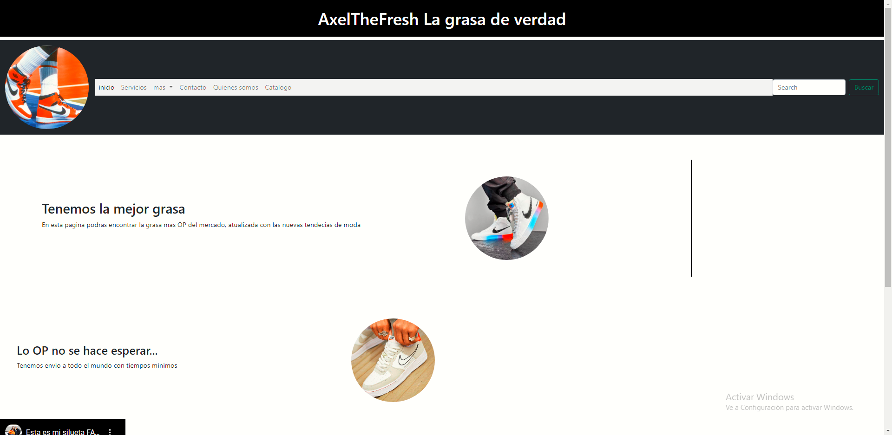
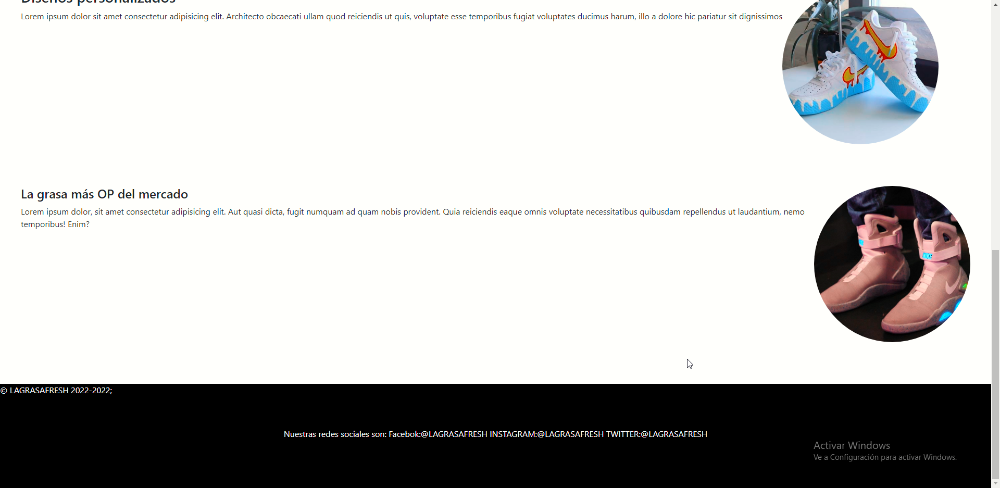
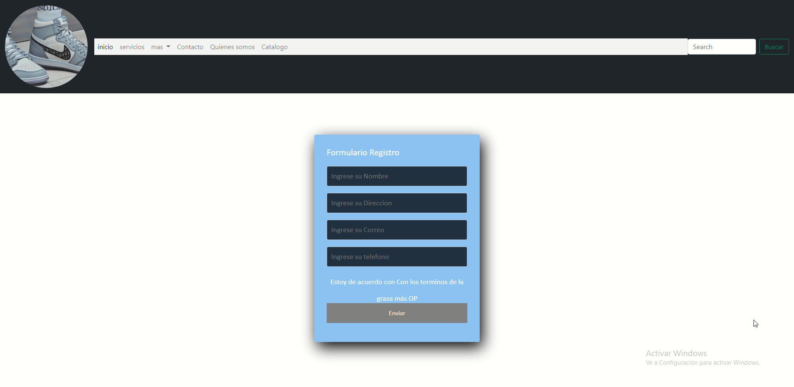
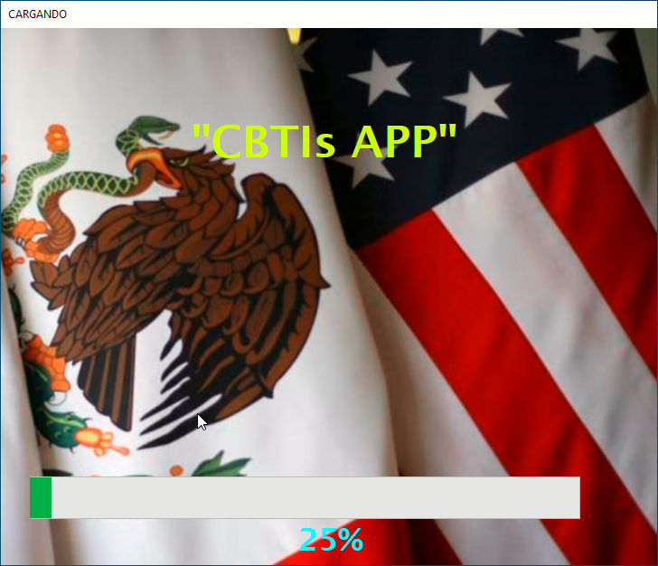
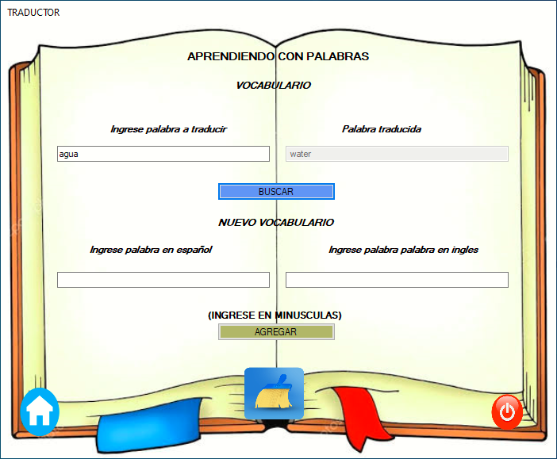
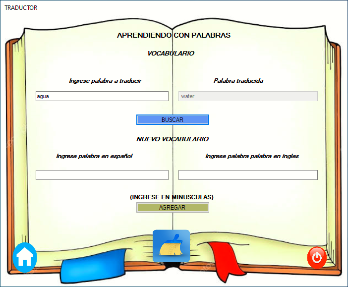
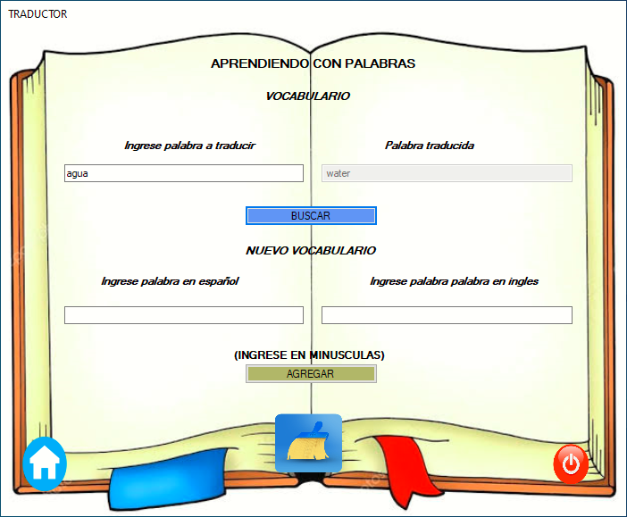

ASO BUSSINES
Inicio
¿Quién soy?
Servicios y curriculum
Portafolio
Contacto
Visión, Misión y
objetivo de la página
Misión
Lograr integrarme a una empresa de desarrollo web-móvil donde sea una pieza
fundamental dentro del equipo capaz de cumplir y mejorar en todos los
proyectos web
Visión
Ser visto como un elemento clave dentro de los proyecto a desarrollar,
que me reconozcan por mi trabajo de desarrollo y reflejar mis conocimientos
a los demás para mejorar junto con mi equipo de trabajo.
Objetivo de la página
Darme a conocer mi marca personal, mi curriculum full-stack para ampliar mi
mercado laboral
¿Quién soy?
Servicios
Portafolio de evidencias
  



 
